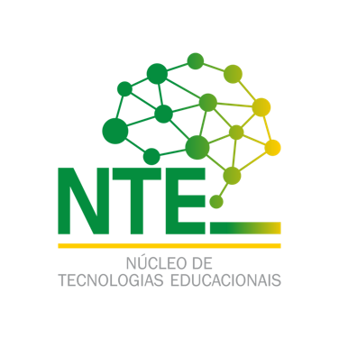

×



Divisão de Tecnologias Educacionais
Realização de práticas inovadoras que facilitem a aprendizagem, incentivo ao uso de ferramentas tecnológicas educacionais e suporte pedagógico.
Estrutura
Composta por 6 NTEs (Núcleos de Tecnologias Digitais) nos municípios de Rio Branco, Sena Madureira, Tarauacá, Cruzeiro do Sul, Acrelândia e Brasiléia.
Ações Realizadas
- Oficinas sobre: Uso da Inteligência Artificial
- Plataformas Digitais Educacionais
- Gamificação
- Workshop para Professores sobre Cidadania Digital
- Palestras para alunos sobre Cidadania Digital
Números de Atendimentos (até junho)
1.250
Alunos
85
Equipes de Professores